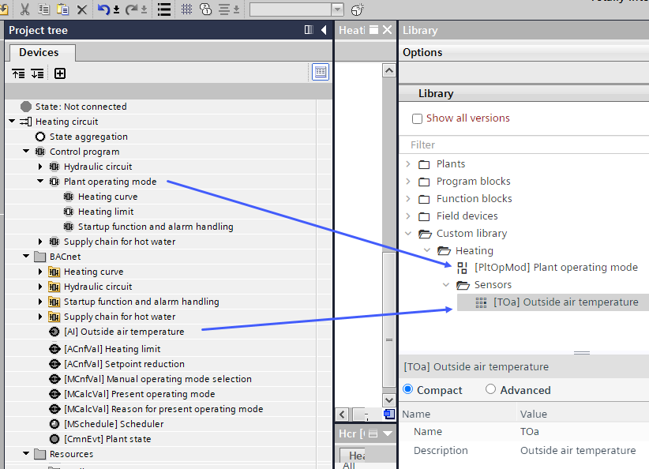

使用自定义库
这Custom library包含您自己的内容。您可以从计算机导入内容，也可以从计算机复制元素或整个植物。Project tree 和Programming编辑到Custom library. TheCustom library默认为空。
Plants navigation view
Programming editor

Copy an element from the Plants navigation view to the custom library
- Drag one or more elements from the Project tree to the Custom library.
- The elements are copied to the Custom library.
Copy an element from the Programming editor to the custom library
- Do one of the following:
- Select one or more elements in the Programming editor and drag them to the Custom library.
- Select one or more elements and right-click in the Programming editor and select Copy to custom library.
- The elements (including their properties, the connections between the elements, their relative positions to each other, their referenced BA objects and their properties) are copied to the Custom library.
Add a folder to the custom library
- Right-click the Custom library and select Add folder.
- A new folder is created.
- (Optional) Click the folder to rename it.
Rename an element in the custom library
- Select an element in the Custom library.
- The Properties pane at the bottom of the Library opens.
- In the Properties pane, select Compact or Advanced and change the name and description of the element in the Custom library.
Add tags to an element in the custom library
- Select an element in the Custom library.
- The Properties pane at the bottom of the Library opens.
- In the Properties pane, select Advanced.
- In the Tags field, add one or more tags to the element.
- The tags are assigned to the element. You can now use the Filter field to filter the Custom library contents according to the tags you created.
Import data to the custom library
- Right-click a folder in the Custom library and select Import.
- Select the file that you want to import into the Custom library and click OK.
- The content is imported into the Custom library.
Export data from the Custom library
- Right-click a folder or element in the custom library and select Export.
- Select the folder where you want to save the content of the Custom library and click Save.
- The content of the Custom library is saved.